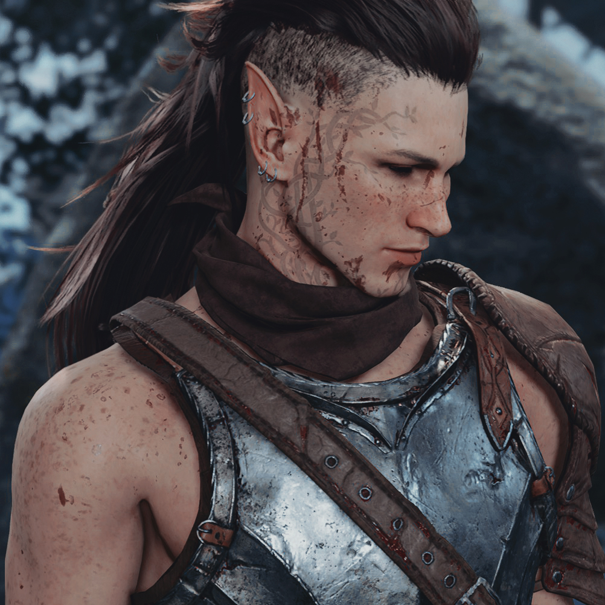

EgilIn the deep and shadowy heart of Eldergrove, where ancient trees whispered secrets of the past, lived a druid named Egil. His journey, marked by the struggle between his wild nature and his human essence, was a path full of challenges. Known for his favorite transformations, a wolf and a bear, Egil's efforts to master his primal instincts were a constant struggle. Tragedy struck when raiders, shrouded in the darkness of night, laid waste to the circle of the Silvermoon Druids. Flames devoured everything: the sacred forest, ancient wisdom, and lives dear to Egil. In his pain, Egil fled into the depths of the forest, his humanity diminishing with each step into the wild. As the years passed, stories of two imposing beasts began to circulate among the villages bordering Eldergrove. Ominous tales spoke of a wolf and a bear, lurking in the shadows of the forest, relentlessly hunting both humans and prey alike. Whispers of their chilling howls and spectral forms served as a warning, cautioning all who ventured near of the dangers lurking in the heart of the forest. One fateful night the druid's fate took another lamentable turn. In his wolf form, he chased a deer, driven by his most basic instincts, the thirst for blood, more sport than necessity. The pursuit ended when Egil, cornering the deer, recognized in its fearful eyes someone familiar, a fellow druid from times of peace, now gravely wounded by his claws and fangs. It was never a deer. It was always his dear friend, Isolde, fleeing from him. This realization awakened Egil from his savage trance. He recognized the magnitude of his actions, the loss of his dear friend, and the cost of his surrender to the wild. Overwhelmed by remorse, Egil understood the need to reconcile with his past and control the inner beast. With this incident as a catalyst, Egil swore to seek a life beyond the forest. He realized that his path was not simply a return to humanity, but a journey to heal the scars of his soul. Thus, his story began to turn into an act of... redemption, perhaps. Or vengeance. However, as the druid wandered the paths outside of Eldergrove, his shadow intertwined with the whispers of the forest, a haunting reminder that the line between man and beast, sanity and madness, was as thin as a spider's web. |
||||||||||||||||||
| Personality |
|---|
|

Egil is cautious and reserved, extremely selective when it comes to trusting others. He is hard to please, and although he always seems to have a hint of a bad mood, within him lives a longing to experience emotions lost in his distant memories, far from the animosity and desire for revenge that brews in his heart. As a druid, his harmony with nature leads him to seek its protection, but as a shapeshifter, and due to the past he carries with it, he often loses patience easily. Sometimes, even control. |
| Background |
|---|